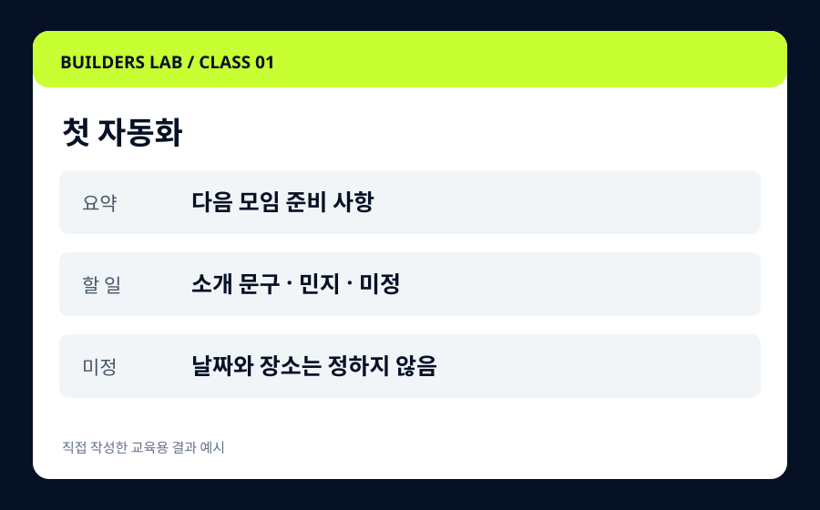
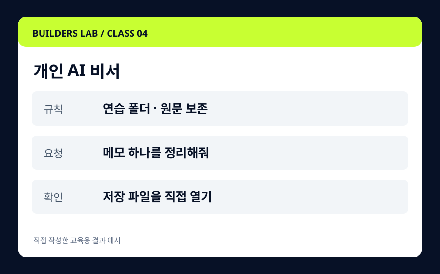

AI BUILDERS LABCLASS 01
Codex내 첫 자동화

Codex 첫걸음과 첫 자동화
흩어진 모임 메모를 요약·할 일·미정 사항으로 정리합니다. 설치부터 결과 파일을 여는 순간까지, 한 단계씩 함께해요.
메모를 정해진 형식으로 정리하는 작업
실습 교재 · 새 과제 · 피드백과정 보기 ↗
나를 돕는 AI 비서

CLASS 04 · 연결
Codex로 익힌 요청과 결과 확인을 바탕으로 Hermes를 만납니다. 여러 일을 한꺼번에 맡기기보다, 공개 메모를 정리하는 비서 하나를 목표로 해요.
반복 작업의 규칙을 정해봤고 비서 형태로 확장하고 싶은 분
01 첫걸음과 02 업무 활용 권장. 지식 자료를 연결하려면 03 과정도 도움이 됩니다.
PROJECT PREVIEW
실습의 입력과 결과를 먼저 살펴보세요. 예시를 바탕으로 나만의 자료로 다시 만듭니다.
새 대화에서도 같은 규칙으로 모임 메모를 처리하고 싶어요.
규칙연습 폴더 · 원문 보존
요청메모 하나를 정리해줘
확인저장 파일을 직접 열기
직접 작성한 학습 예시입니다. 펼치기는 AI 실행이 아닙니다.
같은 결과를 만드는 실습 ↗CURRICULUM
4개 챕터 · 직접 해보는 12개 학습 항목
시연 → 함께 실행 → 독립 과제 → 평가와 복습의 순서로 진행합니다. 실제 개설 일정은 별도 안내합니다.
새 대화에서 규칙을 읽히고 challenge.txt를 처리하세요. 다음에는 없는 missing-challenge.txt를 요청해 결과를 만들지 않고 멈추는지 확인합니다.
과제와 평가 기준 보기 ↗BEFORE WE START
본인 노트북과 샘플 메모. Hermes의 공식 설치 경로·운영체제 지원·모델 연결 조건을 수업 전에 확인합니다.
설치 문제와 모델 연결 문제를 나눠 확인합니다. 오류 메시지를 기록하고, 토큰·비밀번호는 가린 뒤 도움을 요청합니다.
샘플·요청문·정상 결과·오류 대처가 있는 단계별 실습 교재를 제공합니다.
도움 요청 예시 보기 ↗BUILDERS LEAGUE / CLASS 04
비서가 맡은 일보다 더 많은 일을 하려 해요. 작업 범위와 멈출 조건을 정해 드론의 작전을 바로잡으세요.
아직 클리어하지 않았어요.
실습 결과 확인과 게임 클리어를 모두 마치면 이 과정을 마무리해요. 게임 기록은 이 브라우저에만 저장됩니다.